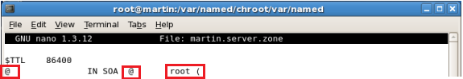

Manual de Creación del DNS
-
Instalación de Paquetes
Para esta instalación de un servidor DNS, se requieren de los siguientes paquetes:- Bind
- Caching-nameserver
- System-config-bind
Los mismos se instalan de la siguiente manera:
Primero abrimos nuestra terminal y nos logeamos con supe usuario o root:
Luego verificamos si los paquetes mencionados arriba, se encuentran ya instalados. Esto lo hacemos con el comando rpm como lo muestra el siguiente Print Screen:
Como podemos ver, el paquete bind se encuentra instalado pero los dos restantes no. Para proceder a instalarlos utilizamos la sintaxis de comando yum –y install caching-nameserver:
Y luego ingresaremos yum –y install system-config-bind:

Una vez instalados los paquetes que necesitamos procederemos a agregar el nombre del dominio. Esto lo hacemos editando el archivo /etc/hosts, escribiendo la sintaxis [editor de texto preferido] /etc/hosts.
Y nos abrirá el siguiente archivo que es donde agregaremos el nombre de nuestro servidor:
Debajo de la ultima línea, escribimos nuestra IP seguida del nombre de nuestra máquina (en mi caso martin.server) y luego el nombre de usuario.
Ejemplo:
Luego guardamos utilizando CRTL + O y salimos utilizando CRTL + X:
A continuación realizamos una copia del archivo que viene por defecto en la instalación en otro directorio en donde encontraremos la configuracion del servidor.
Para hacer esto, ingresamos la siguiente línea:
cp /usr/share/doc/bind-9.3.6/sample/etc/named.conf /etc/named.conf
Hecho esto, editamos el archivo /etc/named.conf:
No abrirá el siguiente archivo:
Al final de este, nos localizaremos en la siguiente línea:
Y escribiremos lo siguiente:
Luego nos situamos en el directorio var/named/chroot/var/named:
Ingresamos un ls para ver los archivos que se encuentran en este directorio:
Hecho esto, procederemos a hacer copia al archivo señalado localhost.zone. En mi caso lo copiaré a uno con el nombre martin.server.zone.
Luego edito el archivo creado con mi editor de texto (en mi caso nano):
En este archivo procederemos a modificar ciertos puntos. Por ejemplo, en la primera línea:

Modificamos los arrobas (@) por el nombre del dominio (en mi caso martin.server) y a la parte que dice root le agregamos un “@ + el nombre”. Ejemplo:
Luego en la otra parte a editar hacemos lo siguiente:
El archivo quedaría así:
Hecho esto, guardamos y cerramos. Luego iniciamos el servicio con la línea service named start:
Luego que el servicio inicia de manera correcta, procederemos a asignarle una IP estática a nuestro servidor. Para esto hacemos lo siguiente:
Nos abrirá la siguiente ventana pidiéndonos la clave:
Luego nos presentará la ventana de configuracion de red:
Damos doble clic en la tarjeta de red:
Y en la parte que dice Statically set IP addresses, la seleccionamos y ponemos nuestra IP:

Cuando guardemos y cerremos la ventana, nos aparecerá la siguiente advertencia, a la daremos a yes:
Luego, abrimos nuestra terminal nuevamente y reiniciamos el servicio de red. Para esto escribimos la sintaxis service network restart:
Como lo menionamos anteriormente, para probar el servidor, hacemos ping al dominio:
Y eso es todo.